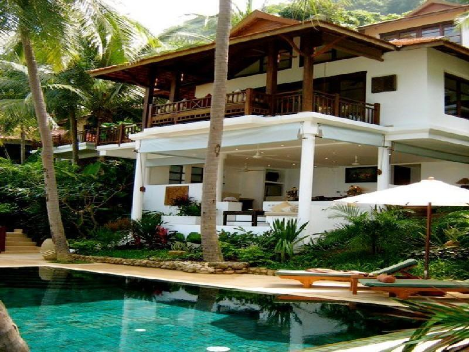
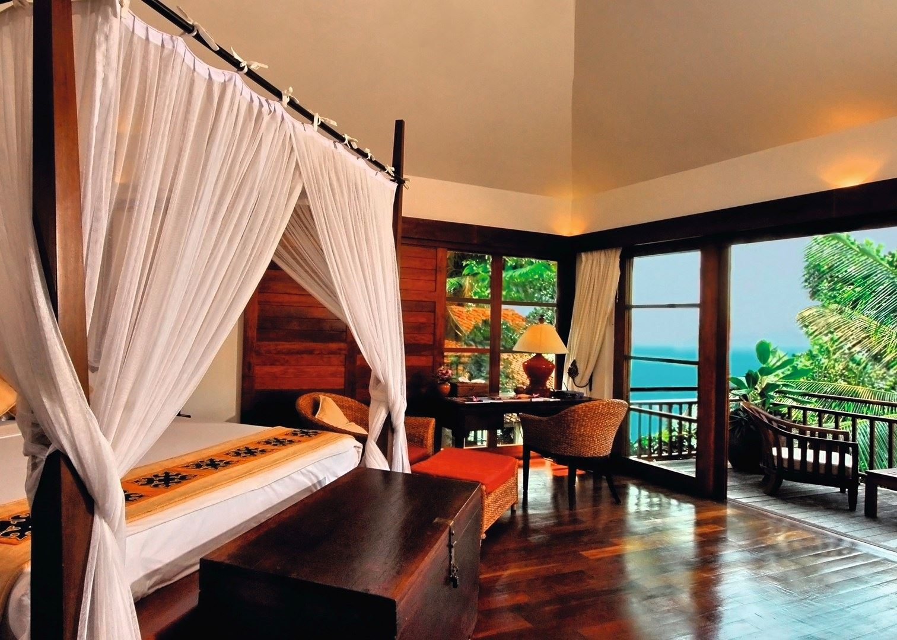

Koh Samui has a tropical climate and the best time to visit is from February to September, which is relatively dry but there is some rain every month. February to April are the driest months. October to January are wet with the monsoon coming from the northeast across the Gulf of Thailand.
Belmond Napasai exudes an irresistible, traditional Thai charm. Stand-alone villas sit within 17 acres of tropical gardens, rich with cashew and coconut trees, hibiscus and bougainvillea. Tempting aromas of fresh local cuisine drift through the air, and staff greet every request with a warm smile. Life is as quiet or as lively as you desire. Spend all day beside the infinity pool or in the relaxing Napasai Spa. Alternatively plunge into the vibrant island scene with our wide range of action-packed resort activities.
Rating:
65/10 Baan Tai
Koh Samui
Maenam
Surat Thani 84330
Thailand
Nearest Airport: Koh Samui International Airport
Price: £6879 per person(Includes Accomodation)
Services within the package:
Belmond Napasai has a wide range of accommodation including 34 Seaview Villas, 11 Beachfront Villas, 8 Garden Villa Suites.
All rooms are designed for maximum space and comfort and have a modern Thai interior. All Villas have balconies and the Suites have private gardens. All prevoiusly mentioned rooms have the benefit of independent luxury accommodation with private pool, with all the facilities and services of the hotel.
The island of Koh Samui is a tropical paradise with a hilly jungle interior and sweeping white sand beaches and azure waters. Belmond Napasai, which is part of the Belmond group, is hidden amongst dense cashew and palm trees on Baan Tai beach on the island's exclusive northern coast where the property’s extensive grounds ensure privacy and tranquillity.
.
Nestled on the beach, this Bang Po hotel is within 3 mi (5 km) of Lomprayah Pier, Mae Nam Beach Pier and Santiburi Samui Country Club. Bo Phut Beach and Bo Phut Beach Pier are also within 6 miles (10 km). All 69 individually decorated properties feature free WiFi and Select Comfort beds. Upscale amenities include fireplaces and deep soaking bathtubs, and guests can also appreciate conveniences such as sitting areas and coffee makers.
Seaview Villa:
Sumptuous cotton and bamboo interiors create a fresh and sophisticated atmosphere, while a spacious private balcony offers the perfect space to enjoy the sunset.
The 62m2 Seaview Villas are surrounded by tropical palm trees and lapped by the gentle ocean breeze. Features include a king size bed, Thai-style sofa suitable for sleeping one child, spacious bathroom with terrazzo bath and rain showerhead, private balcony with stunning views and wireless internet.

Beachfront Villa:
The 62m2 Beachfront Villas command spectacular views across the Gulf of Thailand. Features include a king size bed, Thai-style sofa suitable for sleeping one child, spacious bathroom with terrazzo bath and rain showerhead, private balcony with stunning views and wireless internet.

Garden Villa:
Garden Villa Suites are situated in a large private spa garden; a personal paradise. The ample space and secluded privacy make it the perfect choice for small families.
Garden Villa Pool Suites enjoy the tropical scenery from the luxury of the private pool. Silk and cotton interiors complement the outside greenery to create a fresh and vibrant ambience.
Villa suite features include a master bedroom with king-size bed, airy living room with two Thai-style sofas, spacious bathroom with terrazzo bath and rain showerhead and wireless internet.